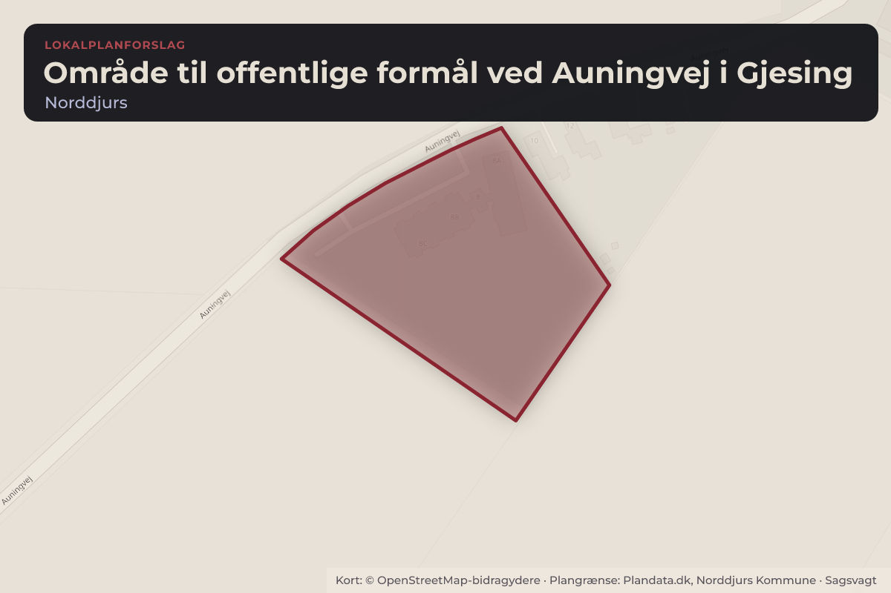
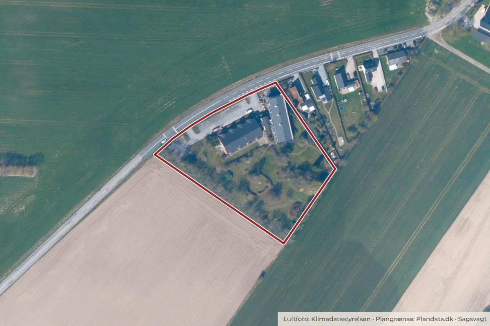

Besluttet 6. oktober, Kommunalbestyrelsen, Norddjurs
Endelig vedtagelse af Lokalplan 135-707 for et område til offentlige formål ved Auningvej i Gjesing
Chefen for Plan, Byg og Miljø indstiller, at Lokalplan 135-707 - område til offentlige formål ved Auningvej i Gjesing og kommuneplantillæg nr. 4 vedtages endeligt.

Kort: © OpenStreetMap-bidragydere. Plangrænse: Plandata.dk, Norddjurs Kommune.

Har du et billede fra Område til offentlige formål ved Auningvej i Gjesing? Send det til os
Kort fortalt
- Hvem
- Kommunalbestyrelsen, Norddjurs Kommune
- Hvornår
- Tirsdag 6. oktober 2026
- Status
- Besluttet. Godkendt.
Læs hele sagen Kommunens egen tekst
Sagsfremstilling
Forslag til Kommuneplantillæg nr. 4 og Lokalplan nr. 135-707 blev vedtaget af
Kommunalbestyrelsen den 21. april 2026 og har været fremlagt i offentlig høring i perioden fra den
28. april til den 23. juni 2026.
Der er i den offentlige høring ikke indkommet nogen høringssvar.
Der skal tages stilling til endelig vedtagelse og offentlig bekendtgørelse af Kommuneplantillæg nr.
4 og Lokalplan nr. 135-707
Baggrund
De Socialfaglige Huse har købt det tidligere plejehjem Bakkely af Norddjurs Kommune for at
indrette et botilbud i eksisterende byggeri. Vedlagt er et oversigtskort.
Ejendommen er omfattet af lokalplan 55-206. Indretning af et botilbud kræver udarbejdelse af en ny
lokalplan og tillæg til kommuneplanen, idet et botilbud ikke kan rummes indenfor
anvendelsesbestemmelsen i den gældende lokalplan.
Lokalplanens indhold
Lokalplanens område er delt op i to delområder. Lokalplanen fastlægger, at delområde 1 må
anvendes til offentligt formål, herunder til døgninstitution, daginstitution, uddannelsesinstitution,
sundhedsinstitution, kulturel institution og offentlig administration. Delområde 2 må anvendes til
teknisk anlæg i form af én telemast. Der findes en 30 meter høj telemast i områdets sydlige læhegn i
dag.
Lokalplanen fastlægger, at der i delområde 1 kan opføres sekundær bebyggelse i 1 etage. Sekundær
bebyggelse defineres som mindre bygninger som bl.a. kan bruges til aktiviteter i forbindelse med
den primære anvendelse.
I delområde 2 giver lokalplanen mulighed for placering af én telemast. Telemasten kan være op til
42 meter høj, målt fra mastens fundament. I tilknytning til telemasten kan der placeres teknikskabe
og lignende mindre bygninger med tekniske installationer.
Lokalplanen fastlægger desuden bestemmelser om bl.a. parkerings- og opholdsarealer og materialeog farvevalg ved ny- eller ombygning.
Lokalplanforslaget, der har været i offentlig høring, er vedlagt.
Kommuneplantillæggets indhold
Kommuneplantillægget fastlægger områder til ”offentlige formål”. Yderligere giver
kommuneplantillægget også mulighed for anvendelsen, tekniske anlæg, i form af én telemast.
Forslag til kommuneplantillæg, der har været i offentlig høring, er vedlagt.
Høringssvar og forslag til ændringer
Der er i offentlighedsfasen ikke indkommet bemærkninger til planlægningen.
Forvaltningen anbefaler således, at de to planforslag vedtages uden ændringer.
Sammenhæng til andre politikker/strategier og fagområder
Der er sammenhæng til Kommuneplan 2025.
Økonomiske konsekvenser
Ingen økonomiske konsekvenser.
Lovgrundlag
Planloven.
Indstilling
Chefen for Plan, Byg og Miljø indstiller, at Lokalplan 135-707 - område til offentlige formål ved
Auningvej i Gjesing og kommuneplantillæg nr. 4 vedtages endeligt.
Behandling i Natur-, Miljø- og Teknikudvalget 21. september 2026
Tiltrådt.
Behandling i Økonomiudvalget 29. september 2026
Tiltrådt.
Beslutning
Godkendt.
Afbud: Kasper Vindbjerg (F)
Bilag
Kilde: Norddjurs Kommune, Kommunalbestyrelsen, referat fra mødet tirsdag 6. oktober 2026, punkt 6. Læs den originale sag hos kommunen.